How to Manage Alarms in Microsoft Windows Clock (Windows 11)
This tutorial covers:
How to Add an Alarm:
How to Delete an Alarm:
No time to scroll down? Click through this tutorial presentation:
Follow along with a video tutorial:
How to Add a Timer With Click
- Step 1: First switch to Alarm mode. In the lower right, click the “+” or “Add an alarm” button. 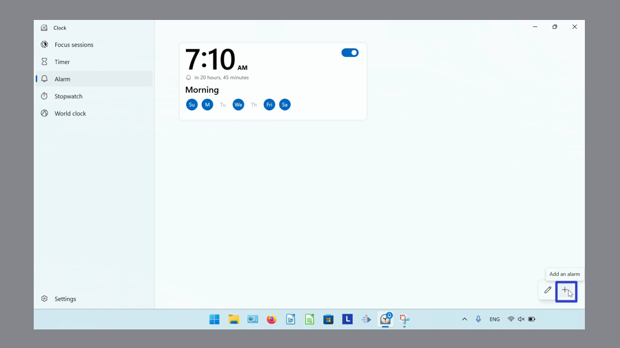
- In the “Add new alarm” window that opens, click to edit the alarm settings and click the “Save” button. 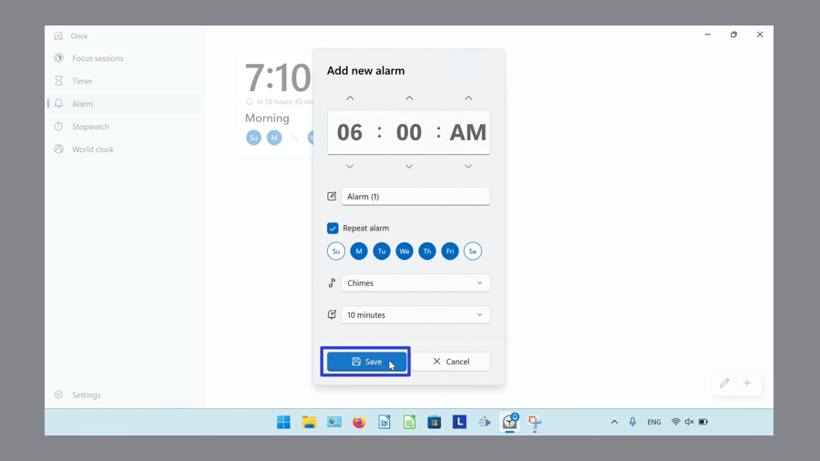
- The Windows Clock displays the new Alarm. 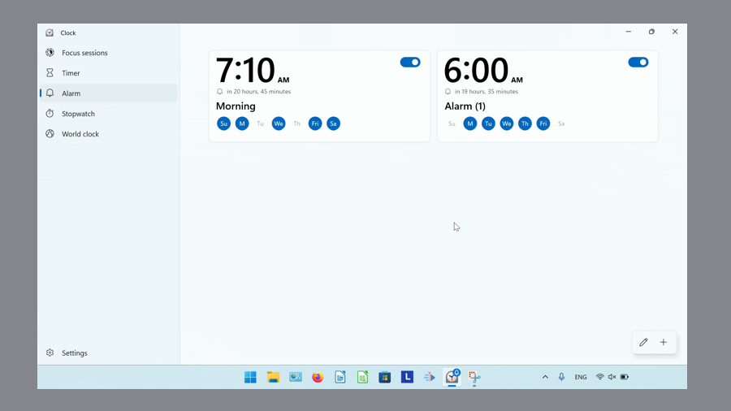
How to Add an Alarm With Keyboard Shortcut
- Step 1: Switch to Alarm mode. On the keyboard press Ctrl + N. 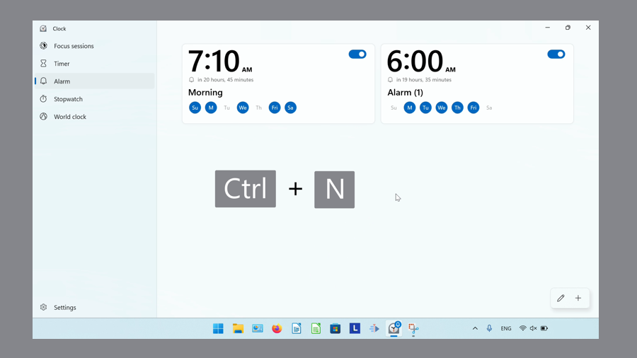
- Step 2: In the “Add new alarm” window that opens, click to edit the alarm settings, then click “Save”. 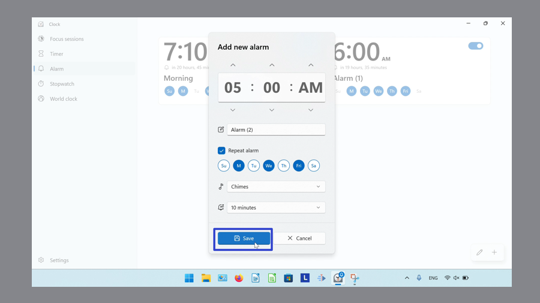
- The Windows Clock displays the new Alarm. 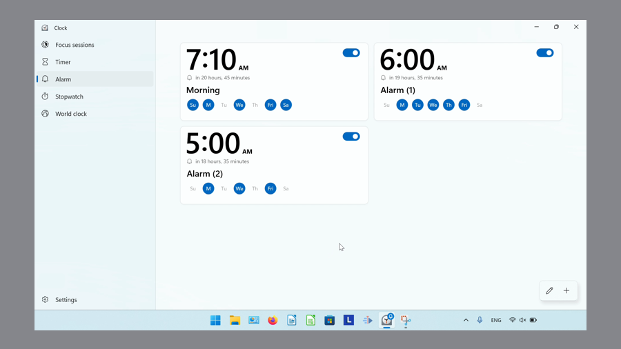
How to Delete an Alarm With Click
- Step 1: First switch to the Alarm mode. Click an Alarm. 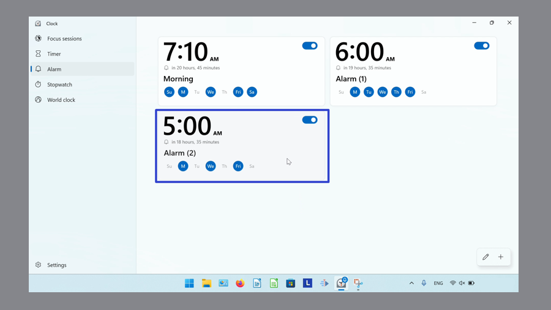
- Step 2: In the “Edit alarm” window that opens, click the “Delete” or trash can button. 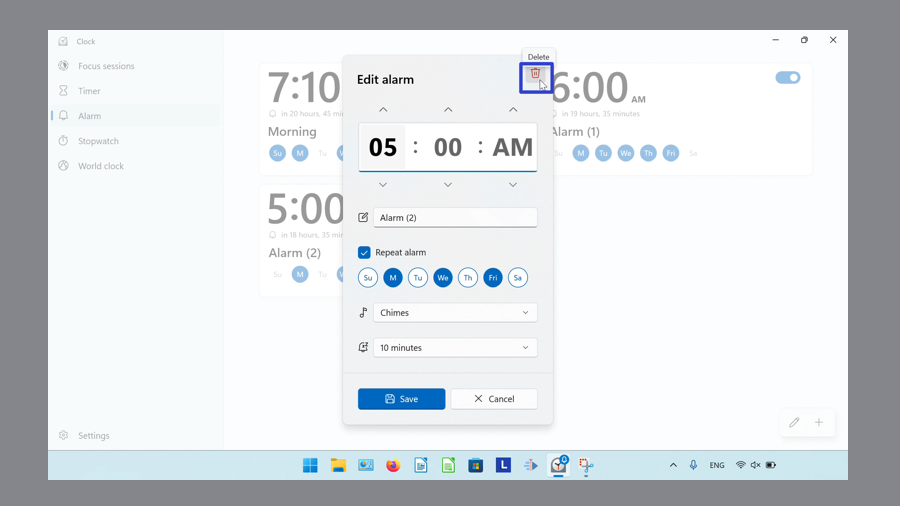
- The Windows Clock app removes the Alarm. 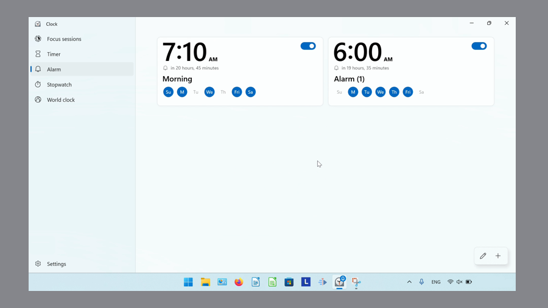
How to Delete an Alarm With Right Click
- Step 1: Switch to the Alarm mode. Right click an Alarm. 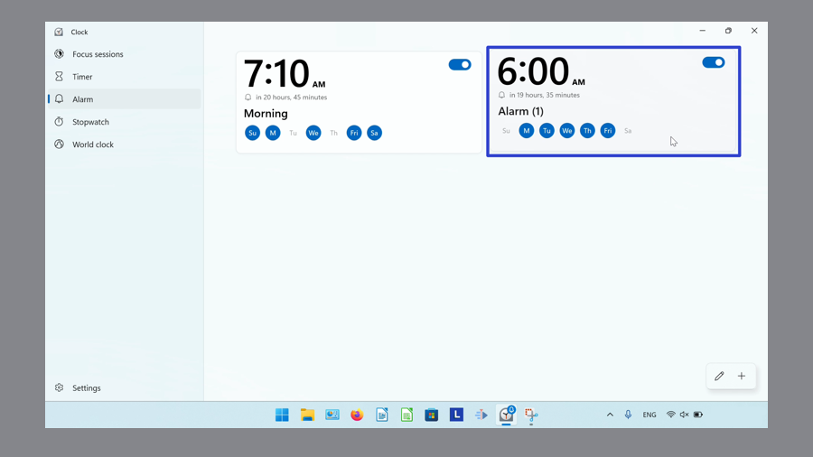
- Step 2: In the menu that opens, click “Delete”. 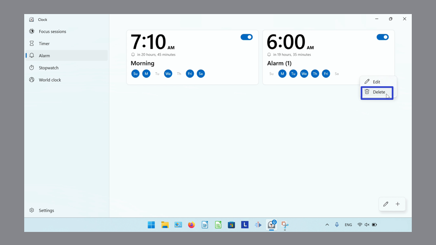
- The Windows Clock app removes the Alarm. 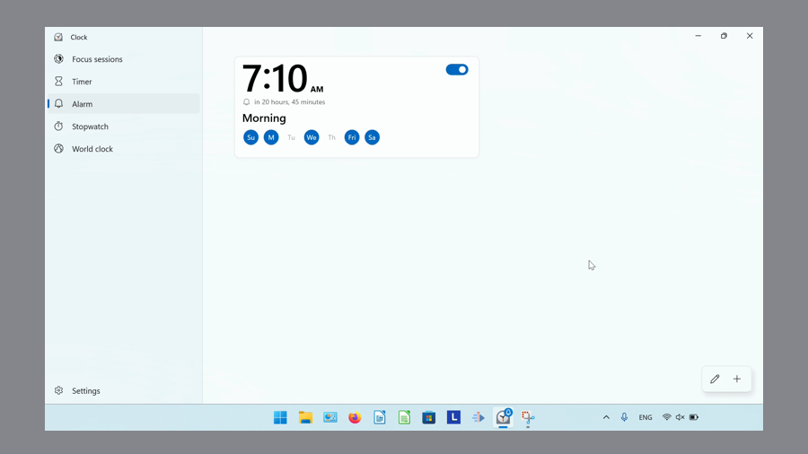
How to Delete an Alarm With Menu
- Step 1: First switch to Alarm mode. In the lower right click the “Edit timers” or pencil button. 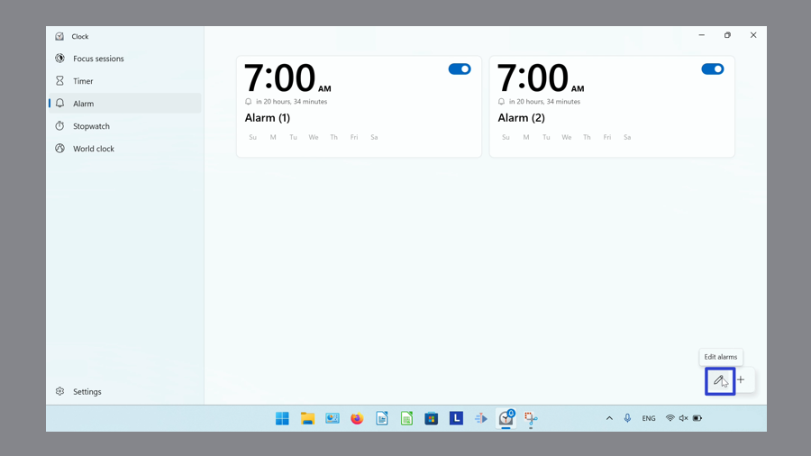
- Step 2: On the upper right corner of an Alarm, click the “Delete” or trash can button. 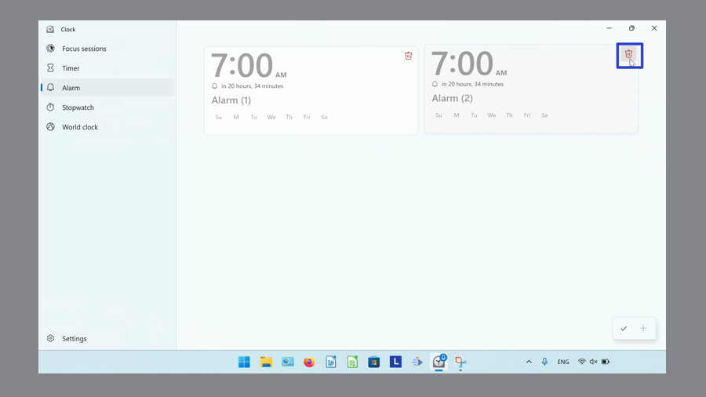
- Step 3: Click the “Done” or check mark button. 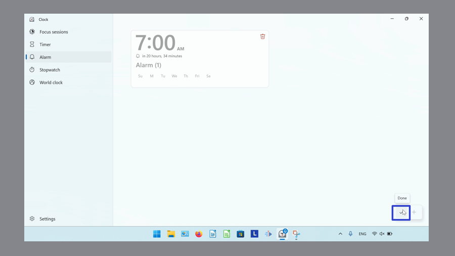
- The Windows Clock app removes the Alarm. 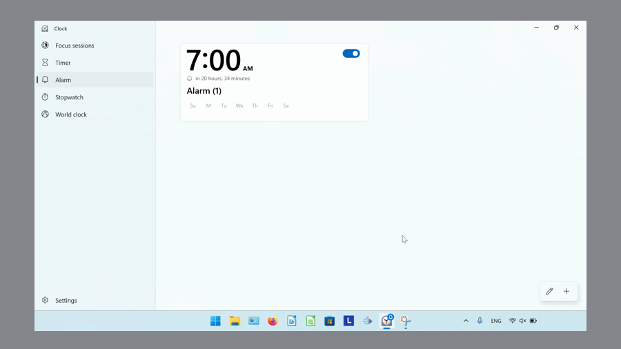
Refer to these instructions for later with this free PDF tutorial.